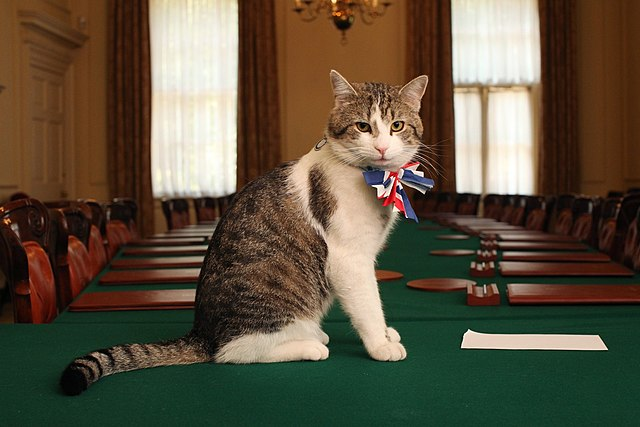

Een legacy
In 10 Downing Street is slechts aan vier huiskatten de titel officieel verleend, te beginnen met Humphrey (in functie van 1989 tot 1997), maar andere katten werden en worden in met name de Britse pers liefkozend met de titel aangeduid.
Ten minste sinds de tijd van Hendrik VIII in de zestiende eeuw wonen er katten in de ambtswoning, voornamelijk om muizen te bestrijden. De huiskatten van 10 Downing Street horen bij het huis en niet bij de premier, zodat de kat blijft als de premier vervangen wordt.
Larry
Sinds 15 februari 2011 is de kat Larry de officiële muizenjager, hoewel hij vanwege een "gebrek aan jachtinstinct" tijdelijk hulp kreeg van een andere kat, Freya.

Volgens de website van 10 Downing Street bestaan de taken van Larry uit het begroeten van gasten, het inspecteren van de veiligheidssystemen en het testen van de geschiktheid van antiek meubilair voor het doen van dutjes. Ook zou hij studeren op een oplossing voor het muizenprobleem van de woning, maar die oplossing zou zich nog in de "tactische planningsfase" bevinden.